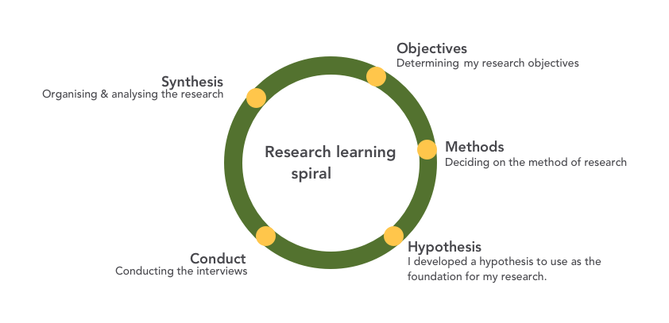
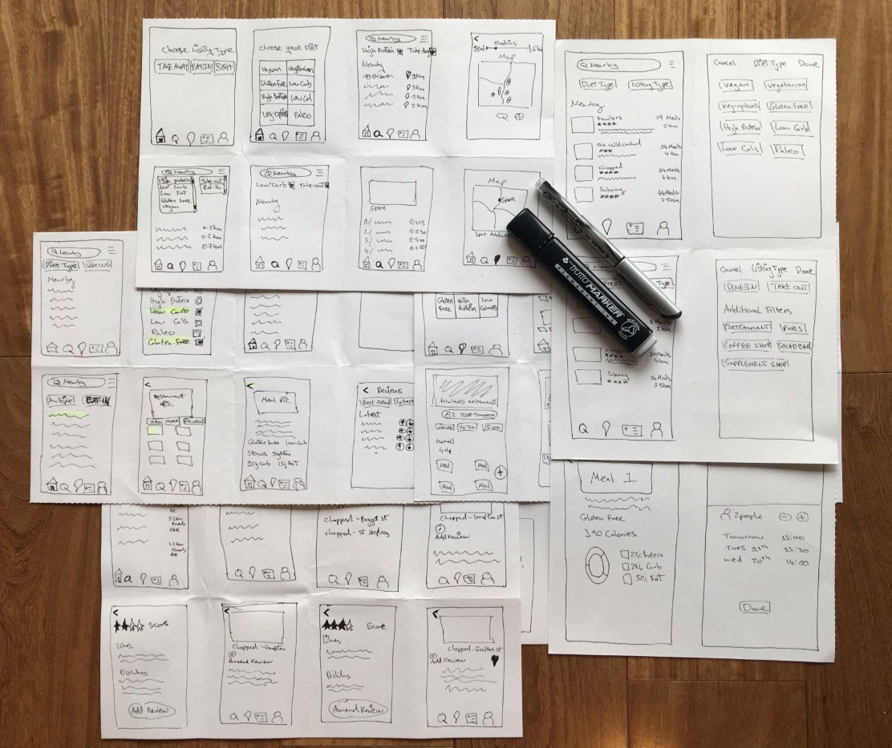
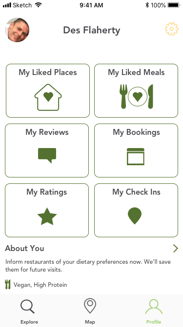
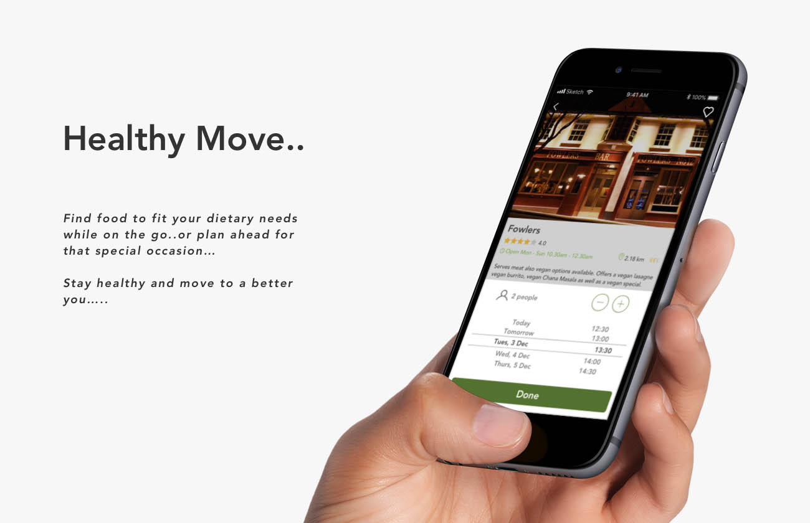
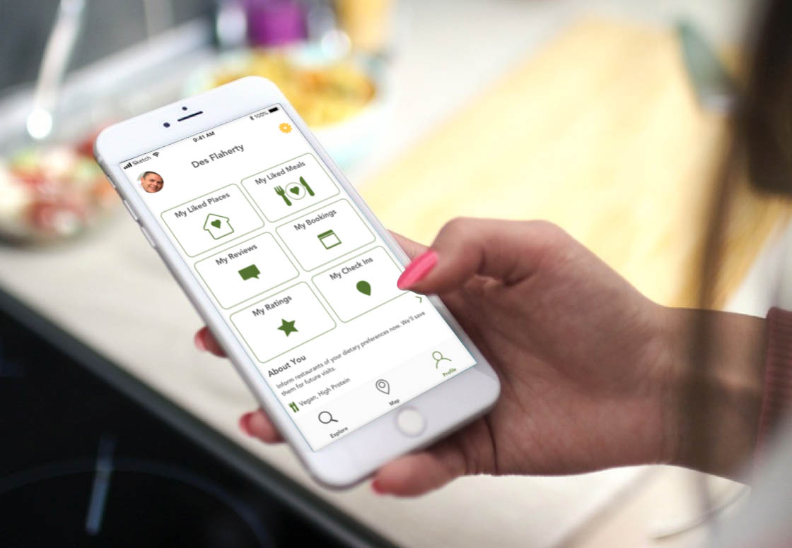
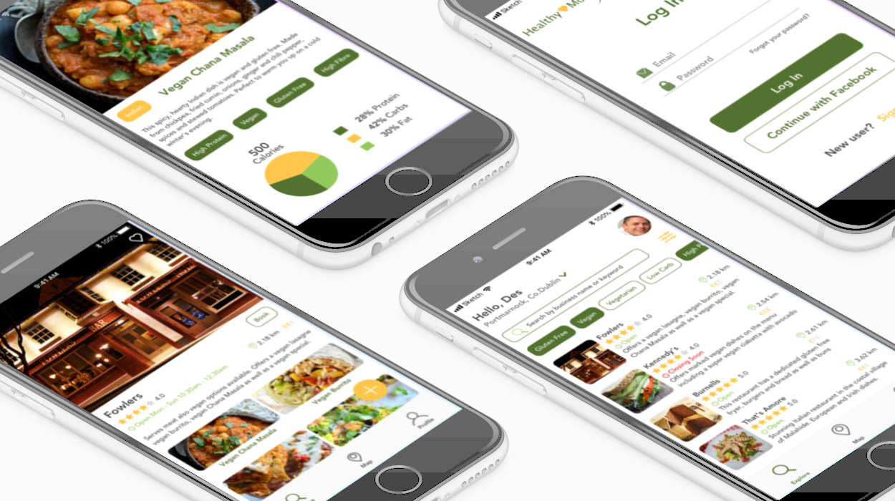

'Healthy Move' is a location based recommendation app. The aim of the app is to locate places nearby for people that are diet conscious and also for those that have a particular dietary requirement such as Gluten Free or Vegan.
The app was created following a user centered design process.
Discovery
- Background Research
- Competitor Analysis & UX Analysis
- User Interviews
- Analysing and Interpreting Data
Concepting
- Persona Development
- User Flows
- Rapid Sketching
- Wireframes from Low to High Fidelity
Prototyping & User Testing
- Prototype Development
- Preference Testing
- User Testing
Objective
From conducting online research it became evident that Irish people are becoming more health conscious and eating habits are changing. Veganism and vegetarian diets are becoming more popular and likewise more people are looking towards healthier options in general.
The objective was to design an app that would meet the needs of those that have a particular dietary requirement and also meet the needs of those that are health conscious in general.
02
UX - Discovery
Competitor Analysis
I conducted a competitive analysis on two leading dietary apps - 'Happy Cow' and 'Find me Gluten Free'. For each of the apps I looked at their overall strategy, market advantage and their marketing profile. I also conducted a SWOT analysis identifying Strengths, Weaknesses, Opportunities (gaps in the apps that I could take advantage of in my app) and external threats that the apps could be facing. Lastly I conducted a UX Analysis of the apps - analysing their usability, layout, navigation structure and compatibility.
Happy Cow
An app designed specifically for those with the requirement of being a vegan or vegetarian. Their tag line is “Find vegan options worldwide”. The app is set apart from competitors as it’s one of the few apps available specifically dedicated to finding veggie and vegan restaurants.
Strengths: One of the few apps specifically dedicated to finding vegan and vegetarian restaurants. Well established brand and the number 1 vegan app for restaurant searches on iOS.
Weaknesses: To use the app on iOS you have to pay a once off fee as there is no free version. The app only gives a general overview of the vegan or veg meals provided by the restaurants.
Opportunities:More information could be provided on meals available such as a photo and the nutritional content of each. An additional search option on the homepage could filter for low carb or low fat options.
Threats:Vegan recipe apps that provide recipes that users could make themselves. Restaurant finder apps such as ‘Forks over Knives’ that include vegan options as part of their listings.
Find me Gluten Free
An app designed specifically for those with the specific requirement of having a gluten sensitivity and so can’t eat foods containing gluten products. The app is set apart from competitors as it’s one of the few apps available specifically dedicated to finding restaurants that offer gluten free products. It serves the purpose of making it easier and quicker for people to find gluten free food when compared to other restaurant search apps.
Strengths:Large customer base of over 3 million global users that provide reviews of restaurants that offer gluten free products. Has a strong presence on social media with over 55k likes on Facebook.
Weaknesses:There are not that many local listings for the Irish market, food chains are from the US only. The app only gives a general overview of the gluten free meals provided by the restaurants, no nutritional content or photo.
Opportunities:More information could be provided on meals available such as a photo and the nutritional content of each. Additional filters could be included as well as more local listings and reviews from local members.
Threats: More reviews need to be added for users in specific regions such as Ireland or a rival competitor could enter the market that could have more regional users and reviews. On the free version of the app there are large ads to sign up to premium that are annoying as they appear in the middle of search results as the user is scrolling, offputting for users.
User Interviews
I used the 5 step process of the 'research learning spiral' during the next phase.
Research Objectives:
- Who are the potential users I am designing for?
- What kinds of tasks and goals will my audience be accomplishing as they use my app?
- When will my audience be engaging with my product?
- Where will my audience be using what I'm designing?
- Why is my audience choosing to use what I've designed and what drives this behaviour?
- How will my users accomplish their goals?
Hypothesis:
I developed a hypothesis to use as the foundation for my research.
"My hypothesis is that there is a market for an app that people who have specific dietary requirements will use. The app will be an easier, simpler and more convenient way for this market to find meals and snacks in comparison to using traditional apps. In addition my app will provide nutritional information as well as pictures of the meals that are available at listings".
Interviews:
A number of 30 minute interviews with potential users of the new app were conducted. Interviews were initially arranged by emailing potential respondents to arrange a suitable time and method for the interview. Interviews were conducted via Skype as well as in person.
- What are your dietary requirements when choosing a place to eat in or to buy food from when on the go?
- How do you find food when you are on the go that meets your dietary requirements?
- How do you find restaurants or pubs that serve food that meet your dietary requirements?
- What apps or websites have you used in order to find suitable food when eating out or when on the move?
- When buying food that meets your dietary requirements what things do you consider?
- If you were to use an app to find places to eat from what features would you find helpful?
Interview key findings:
Patterns/Trends: The respondents all have an interest in the nutritional composition of the food they will be eating. This could be macro nutrients such as protein composition but also calories and sugar and salt levels. Vitamins are important also. They do not seem to be aware of apps that could help them find their requirements but are relying on web research or word of mouth.
Call Outs: Some vegan alternatives seem to be based around processed food that can be high sugar and salt which aren’t that healthy so having vegan meals that also show nutritional content would be an important feature to the app.
Frustrations:The respondent that has Celiac disease mentioned that he didn’t know of any apps that would find him GF meals so he has to ask the staff members in the restaurant. He mentioned that he brings his own bread sometimes for meals and was once asked by a restaurant to sign a waiver before eating so they were covered by insurance in case there was gluten in his meal.
Needs/Wants: Having a photo of the meals was mentioned by all as well as having nutritional information on the meals. Different groups would have different nutritional goals such as vegan, gluten free or high protein, low carb.
03
UX - Concepting
User Personas
From analysing the data gathered from previous research a clear picture of the apps potential users emerged. User personas were then developed based on the patterns and similarities between my interview participants. These personas help to understand and build empathy with the user and will inform future design decisions.
MVP document
A Minimum Viable Product document was then created with the objective to gain validation from target users that such an app will be used to search for places to eat in and buy food from that meets their dietary needs and will be trusted by its users.
MVP1
Success Metrics
In order to measure success, sign ups and user behaviours will be tracked.
Quantitative Measurement:
- Number of downloads.
- Number of sign ups.
- Number of reviews.
- Most used dietary filter.
- Most used location.
- Listings with best user scores.
- Meals with best user scores.
Qualitative Measurement:
- Reviews and feedback from users on their experiences buying food from the listings provided.
- Review comments from users on their experiences using the app.
- Engagement with social media and comments.
- Survey results from users.
- As someone that has Celiac disease I want to be able to search for restaurants that I can eat out in so that I know the meal is Gluten Free.
- As someone working in the health industry I want to be able to find healthy food when I’m in a hurry that meets my nutritional needs so that I don’t break my diet.
- As a Vegetarian I want to be able to find healthy meals and to also read what others have said about the listing so that I can make an informed choice where to buy from.
If the MVP is successful, the following will be considered for a second iteration.
- As a busy office worker who needs to find a suitable meal quickly I want to be able to like places that I have eaten in previously so that they are added to a ‘my favourites’ section in my profile.
- As a user who likes eating out regularly I want to be able to book the restaurant and the time of the meal using the app so that I do not have to phone or email them directly.
- As a user I want to be able to share my reviews on social media so that I can engage with others that have the same dietary needs as me and might not be aware of the app.
User Flows
Based on all the information learned in the research stage as well as assessing what features the app would provide for users I mapped out the primary screens of the app from login to end goal. A number of user stories were created that led to the development of user flows. It was important to make the user journey flow intuitively so that it was a simple process from beginning to end. Each user flow had an entry point and a success criteria. A sample of some of the user flows that were created can be viewed in this section.
User Story 1
"As someone that has a specific dietary requirement I want to be able to find meals in restaurants that meet my needs so that I know they have suitable food available before I go there"
Entry Point: Login.
Success Criteria: Be able to find meals in restaurants that meet my dietary requirements.
User Story 2
“As someone that has a specific dietary requirement I want to be able to find suitable food when I’m on the go so that I don’t break my diet”
Entry Point: Login.
Success Criteria: Be able to find a listing where I can take away food that meets my dietary requirements.
User Story 3
“As someone that has a specific dietary requirement I want to be able to easily find a restaurant where I’ve eaten before so that I can add it to my favourites list"
Entry Point: Login.
Success Criteria: Be able to enter the name of a restaurant and add it to my favourite restaurant list.
Exploratory Sketching
The user flows formed the foundation for initial design sketches. The 'crazy 8s' rapid sketching method was used whereby an A4 sized
piece of paper is folded into 8 squares and a 60 second timelimit per square is given to sketch out initial ideas. Different iterations
of sketching were used to develop ideas for the needed screens and features. A dot vote was used to mark the best ideas from the sketches.
The dot voted designs were pooled together to create a paper prototype for the app. Prott was used to develop the interactive paper prototype.
Crazy 8's - Design Sprint Sketches

04
UX - Prototyping & Testing
Prott Low Fidelity Prototype
The paper prototype was tested recruiting suitable respondents to participate in the testing.The goal was to test the usability of the app. I wanted to ensure that the potential users can navigate through the app and accomplish the tasks that I have set for them and also to identify any pain points or areas of tension that may need to be redesigned.
Usability Testing Tasks:
- Filter by diet type and listing type.
- Book a meal at a restaurant.
- Add a review for a listing.
- Search by a listing name.
- Locate and use the map radius filter.
Testing Results:
There were some useful insights that were discovered from analysing the feedback from the tests.
- The feedback led to a redesign of the diet filter buttons on the homepage so that they were more intuitive and visually pleasing.
- Horizontal scrolling buttons were to be used with an additional filter button that would open a separate screen of extra filter options.
- It was also decided to redesign the footer navigation reducing complexity so that there would be only three main sections needed - 'Explore', 'Map' and 'Profile'.
- The 'Explore' screen should allow users to search by listing name on the same screen as being able to filter by diet requirement and also change their location using a drop down menu.
05
UI - Design & Wireframing
Design Inspiration
Apps and websites were researched online to get inspiration for the look and feel of the new proposed app. Websites such as Dribbble, Behance, Pinterest and Instagram were researched along with various online design related articles. The existing apps were researched under the headings of 'Colour', 'Layout' and 'Type/Icons/Logos'.
Moodboard
A moodboard was created to demonstrate the proposed design look and feel. Two varying styles of moodboard were designed, as can be viewed below. Certain keywords were used to help convey the feeling and idea behind the design styles. One style uses green as the primary colour with yellow as an accent and a ligher shade of green to support as well as shades of grey. An alternative design uses a brighter orange as the primary with bright green as an accent and supporting colours of dark green and grey. It was decided to use the 'Moodboard 1' as the colour scheme for the app, as it was felt that the colours were more appropriate and the alternative moodboard was possibly more suited to a fruit drink or juice bar, as opposed to a health food app.
Mid to High Fidelity Wireframes
Once I had figured out the main user flow and screens for the app I created a number of wireframes to get a better idea of how the information and functional elements would be laid out. These were then iterated on until I settled on a final set of wireframes which were later used as the basis for the visual design of the app. Once the final screens were designed a style guide was also created as a reference to the Typography, Colour Scheme, UI Elements, Imagery and Icons used in the design of the app that should be followed if there are to be any amendments or additions to the app. In addition to wireframes sample responsive screens were developed for iPad and Laptop. The images below show mid to high fidelity screens that were created.
06
User Testing - High Fidelity
Preference Testing
A preference test was conducted using the UsabilityHub website. A complete mockup was tested along with a variation screen to obtain user feedback. Respondents were asked to choose which button style they preferred and to also give a reason for their choice. From a group of 20 respondents the profile white screen performed better with a score of 58%. While the difference is not statistically significant respondents answered that they preferred this design style as it was easier to look at, it was more elegant, more organised and clearer in appearance.
Profile - White - Score 58%
Profile - Green - Score 42%

Reviewing and critiquing
The final screens were critiqued by members of the UI design course. The overall feedback was positive and any constructive feedback was taken onboard and led to some minor adjustments in the design, relating to padding of images and alignment issues as well as typography corrections. The reviewers liked the design and the concept of the app. They liked the colour scheme and professional feel. They also found it functional and easy to use.
Positive User Feedback:
"You work really really well with your colors and keep the style super consistent throughout every single screen, which I find wonderful! Your app looks professional. Actually, I feel hungry right now, so I’d use your app right away if it existed!"
"Your filter choices are really on point and relevant to refine precisely what users might be looking for."
"Your icons are really nice and make it easy to follow actions and to create a hierarchy."
"I look at this screen and I know exactly what to do, the patterns are familiar and display the functions very well."
Constructive User Feedback:
"It’s excellent that your logo feels so dynamic and matches the app name. Fantastic job on that! (Maybe it’s the resolution, but I have the feeling that the heart is not entirely aligned with the font.)"
"Maybe you could add a bit more white space within the cards to give it some room to breathe and to create a bit more of a visual hierarchy."
"Sometimes you use 24h and sometimes 12h system, like 13:30 or 1:30 pm."
"The only thing I might change is to only show 3 columns of restaurants/places in the desktop layout. This way, the user doesn’t get overwhelmed by the sheer volume"
07
Final Screens
Splash Screen
Profile Screen
Restaurant & Meal Screen
Responsive Design
As the application will be available to install on tablet and to view online, I have created the iPad and desktop versions and have defined the breakpoints to show the responsive design and to optimize the application to view on each device.
08
Style Guide
A style guide was created to document the typography to be used for the app as well as the UI components that were developed such as the buttons, icons and navigation elements.

09
Retrospective
What went well?
I studied Marketing previously and have also worked in Marketing Analytics so I believe this background helped me in the early phases of the project to formulate research questions and to conduct the user interviews and the development of the online survey and the user personas. Also testing a low fidelity wireframe sketch early on in the process proved beneficial as it helped shape future design decisions. Online research to gather inspiration and the development of a moodboard also helped to create the final design look and feel.
Skills:
User Interviewing, Usability Testing, User Surveys.
Processes:
User Centered Design, Research Learning Spiral Methodology, Crazy 8's Design Sprint.
Learnings:
Research design sites online, Engage with end users to discover their wants and needs. Test designs early and often.
What was a challenge?
It took me a few attempts at the crazy 8 design sprint methodology before I was able to start generating design ideas, coming up with different looks for the same screen was something that was a challenge also. The user flows were an area that I found to be quite tricky and time consuming but spending time getting the user flows correct after a number of iterations helped with the design of the wireframes at a later point in the process.
Skills:
Sketching, User Flows.
Processes:
User Centered Design.
Learnings:
Sketch more frequently, Get more project experience for user flow diagrams.
What can I improve on?
The feedback from the low fidelity user testing was used to develop the mid and high fidelity wireframes. The high fidelity wireframes were then reviewed and amended to develop the final screen designs. In future additional testing could be incorporated before the high fidelity wireframes were created. User feedback from the high fidelity wireframes was mostly positive however, and any constructive feedback was reviewed and amendments were made.
Skills:
Wireframing, Reviewing & Critiquing.
Processes:
Design Iteration and Testing.
Learnings:
More user testing and redesign if needed throughout wireframe development.